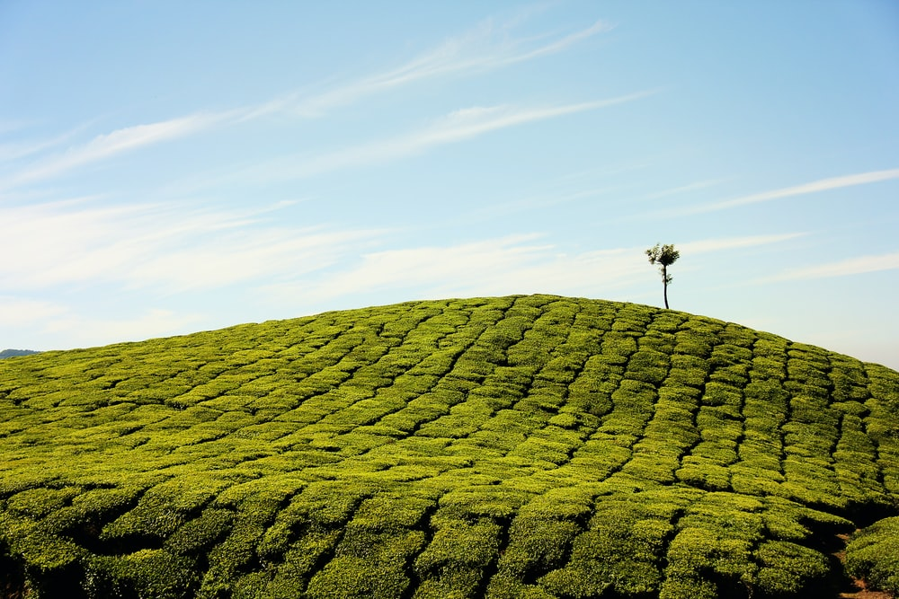

10. Best places to visit in Kerala
Although the entire Kerala is a place to roam in itself, some of the 10 best places to visit in Kerala are as follows.
1.Munnar
Munnar is a scenic tourist destination of Kerala. It is located in the Idukki region of Kerala. Its height is about 5000 to 8000 feet above sea level. This place is situated on the Kannan Devan hills of Devikulam taluk.
The Mattupetty Dam, Pothamedu Viewpoint and Tea Museum are the main places here to visit. This place is located 120 kilometers from Kochi, 284 kilometers from Trivandrum and 142 kilometers from Coimbatore.
2. Alleppey
Alleppey was founded by Raja Keshawadasan 1762 AD. Alleppey is the most famous destination of Kerala backwater. You can enjoy this place very well through a houseboat.This backwater is formed by the joining of a Vembanad lake and an Arabian Ocean.